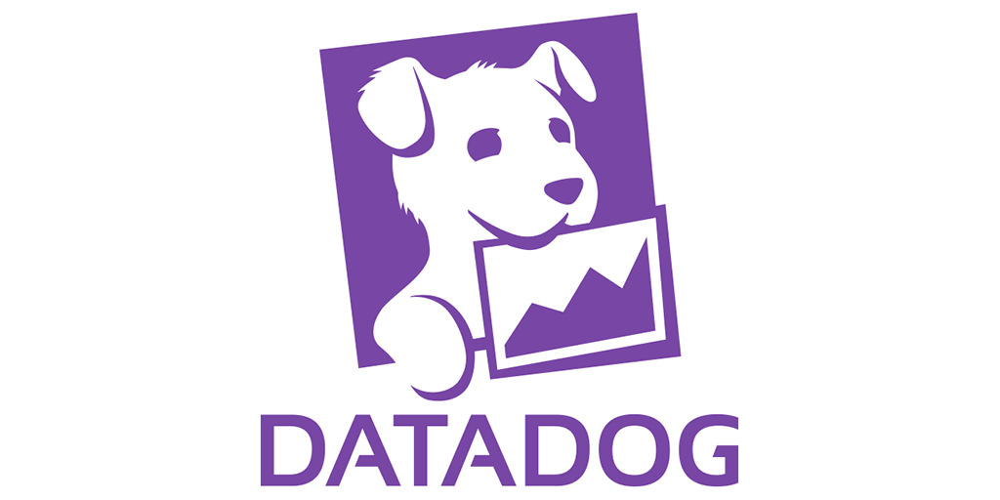
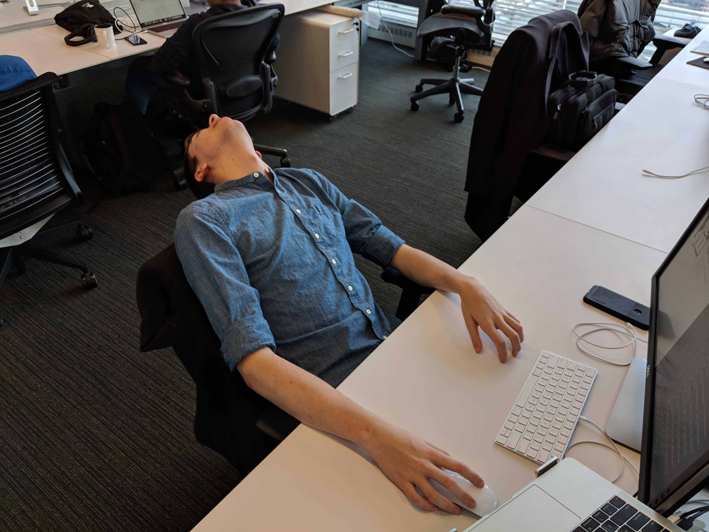
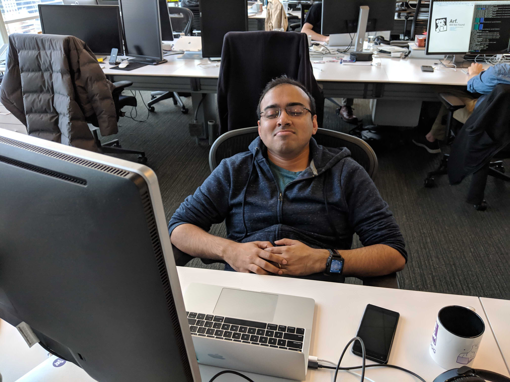
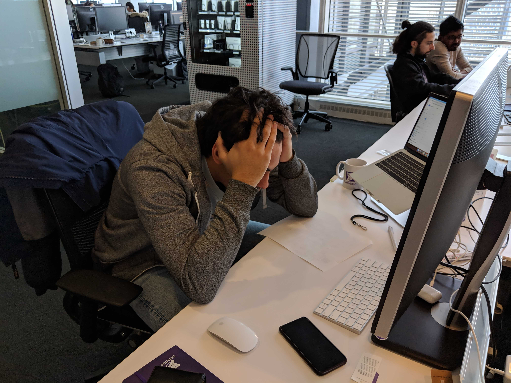
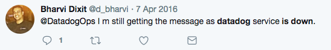
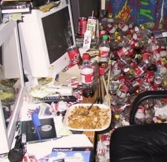

hi
this is my talk
its about software
but more so
its really about life
but first
im dan
i work in software


we are a happy place

people love working here



our customers love us

we are very stable

and or apis are clean and widely loved

being a software engineer is great too
the workplace is very safe

and clean

and you get to be on the computer all day
which is what you would be doing anyway
what do we do?
glad you asked
i'll let you know